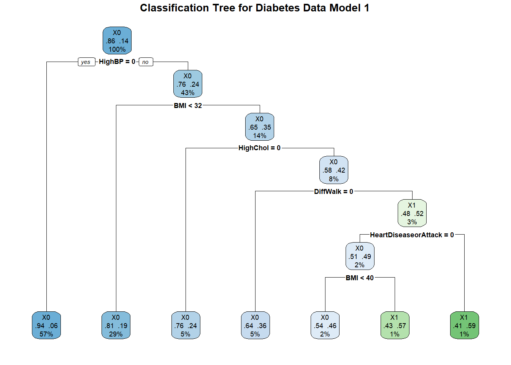
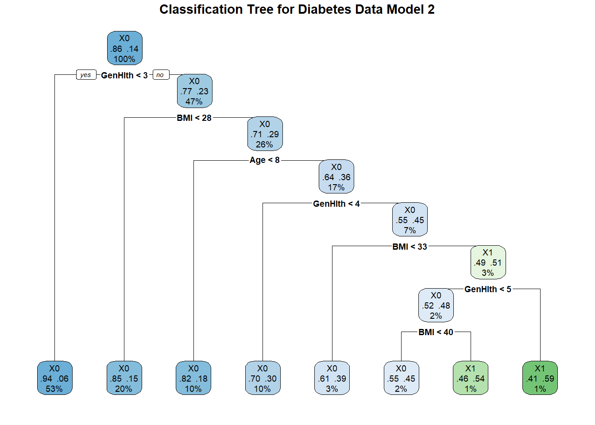

library(tidyverse)
library(dplyr)
library(caret)
library(ggplot2)
library(rpart)
library(rpart.plot)
library(randomForest)Diabetes Health Indicators - Modeling
Diabetes Health Indicators Modeling
After conducting an exploratory data analysis (EDA), our next objective is for inference about this dataset and to posit several models, test them, and determine which ones best describe our data. Key variables of interest include high cholesterol, high blood pressure, general health and age. Utilizing logistic regression modeling, classification tree modeling, and random forest modeling; we will identify the best-performing model from each category and compare their performance on the test data to determine the overall best model.
#Read in the dataset, Factorize the binary variables for better downstream analysis and remove BMI observations 50. Combining in this way saves substantial amount of memory in the R environment.
diabetes_data_clean <- read_csv("diabetes_binary_health_indicators_BRFSS2015.csv") %>%
mutate_at(vars(Diabetes_binary, HighBP, HighChol, CholCheck, Smoker,
Stroke, HeartDiseaseorAttack, PhysActivity, Fruits,
Veggies, HvyAlcoholConsump, AnyHealthcare, NoDocbcCost,
DiffWalk, Sex), as.factor) %>%
filter(BMI < 50)Data Preparation for Modeling
Using the caret package syntax, I have split the data into train and test at a 70:30 ratio respectively. This is done as a mean of testing our predictions on testing, or unseen data. This acts as a baseline to which we can refer back to and gauge model performance.
#Split the data using caret package syntax
set.seed(13579)
diabetesIndex <- createDataPartition(diabetes_data_clean$Diabetes_binary, p = 0.7, list = FALSE)
diabetes_train <- diabetes_data_clean[diabetesIndex, ] #Count = 175,794
diabetes_test <- diabetes_data_clean[-diabetesIndex, ] #Count = 75,339
#I had some problems downstream while planning and executing code to build models. R does not like when I run train() on a response variable with strictly numeric factors. The following code corrects that issue by changing the response values from "0" and "1" to "X0" and "X1". Henceforth, "X0" will indicate patients who do not have a diabetes diagnosis while an "X1" will affirm a diabetes diagnosis.
# Rename levels to valid variable names
levels(diabetes_train$Diabetes_binary) <- make.names(levels(diabetes_train$Diabetes_binary))
levels(diabetes_test$Diabetes_binary) <- make.names(levels(diabetes_test$Diabetes_binary))Logistic Regression Modeling and Log Loss
A Logistic Regression Model is a modeling technique designed for binary classification, where the target variable is categorical with two possible outcomes (e.g., 0 and 1, true and false, or success and failure). This model estimates the likelihood that a particular input falls into one of the categories. Logistic Regression is a great option for modeling with this specific dataset since we are working in binary data while we also want to makes no assumptions about the distribution of our data. Another strength is that LogLoss compares prediction probabilities to binary output; and evaluates probability estimates which make for a more robust measurement method over accuracy for probabilistic models. Interpretation is made simpler with log-odd to one-unit change predictor variable.
Using linear modeling might not be appropriate for this data. Logistic regression modeling would be a better alternative. In the plot below, notice that the linear regression line does not fit our data well for a variable BMI. The entire linear regression line completely avoids the positive diabetes diagnosis points. This is due to the overwhelmingly disproportion of non-diabetic responses.
ggplot(diabetes_data_clean, aes(x = BMI, y = Diabetes_binary)) +
geom_jitter() +
geom_smooth(method = "lm", aes(group = 1))`geom_smooth()` using formula = 'y ~ x'
Caret contains a trainControl() function that allows the setting of modeling parameters
# Define the control using a 5-fold cross-validation
train_control <- trainControl(method = "cv", number = 5, summaryFunction = mnLogLoss, classProbs = TRUE)
#NOTES: classProbs has to be TRUE for mnLogLoss to work.
#Source: https://stackoverflow.com/questions/59669490/error-with-caret-and-summaryfunction-mnlogloss-columns-consistent-with-levHere is the setup for performing a logistic regression modeling on three candidate models I am interested in testing. These same formula models will be used in classification and in random forest modeling.
# Model 1: LogReg Model with all except GenHlth and Age
set.seed(13579)
model_1_LogReg <- train(Diabetes_binary ~ . -GenHlth -Age,
data = diabetes_train,
method = "glm",
family = binomial,
trControl = train_control,
metric = "logLoss")
# Model 2: LogReg Model with all except HighBP and HighChol
set.seed(13579)
model_2_LogReg <- train(Diabetes_binary ~ . -HighBP -HighChol,
data = diabetes_train,
method = "glm",
family = binomial,
trControl = train_control,
metric = "logLoss")
# Model 3: LogReg Model with all except HighChol
set.seed(13579)
model_3_LogReg <- train(Diabetes_binary ~ . -HighChol,
data = diabetes_train,
method = "glm",
family = binomial,
trControl = train_control,
metric = "logLoss")
# Create a data frame to store the log-loss values
log_loss_results <- data.frame(
Model = c("Model 1", "Model 2", "Model 3"),
LogLoss = c(
min(model_1_LogReg$results$logLoss),
min(model_2_LogReg$results$logLoss),
min(model_3_LogReg$results$logLoss)
)
)
# Print the log-loss results.
# Lower Log Loss indicates better model performance in that lower log loss can be interpreted as less of a difference between the actual classes and those that were predicted.
print(log_loss_results) Model LogLoss
1 Model 1 0.3286191
2 Model 2 0.3252869
3 Model 3 0.3190218Classification Tree
A classification tree model, commonly referred to as a decision tree, is a predictive technique used for classification problems. It operates by dividing the dataset into smaller subsets based on the values of input features, creating a tree-like structure. In this structure, each internal node signifies a decision based on a particular feature, each branch indicates the result of that decision, and each leaf node denotes a class label. Binary data works well with tree data since trees are naturally forked in halves. This is visually intuitive in that it tells the story of the decision at the node. Although we handled outliers earlier, trees are less sensitive to them. Like logistic regression, classification trees make no assumptions about the distribution–linearity is not consequential to this model.
set.seed(13579)
# Model 1: LogReg Model with all except GenHlth and Age
cp_values_model_1 <- seq(0.000, 0.004, by = 0.001)
results_model_1 <- data.frame(CP = numeric(), Accuracy = numeric())
# Loop through each cp value
for (cp in cp_values_model_1) {
model_1_tree <- rpart(Diabetes_binary ~ . -GenHlth -Age, data = diabetes_train, method = "class", control = rpart.control(minbucket = 20, cp = cp))
# Predict on the test set
model_1_predictions <- predict(model_1_tree, diabetes_test, type = "class")
# Confusion matrix to evaluate the model
model_1_conf_matrix <- confusionMatrix(model_1_predictions, diabetes_test$Diabetes_binary)
# Store accuracy
accuracy <- model_1_conf_matrix$overall['Accuracy']
results_model_1 <- rbind(results_model_1, data.frame(CP = cp, Accuracy = accuracy))
}
# Find the best cp based on maximum accuracy
best_cp_model_1 <- results_model_1$CP[which.max(results_model_1$Accuracy)]
print(paste0("Optimal Complexity Parameter: ", best_cp_model_1))[1] "Optimal Complexity Parameter: 0.001"# Fit the final model using the best cp value
model_1_final_tree <- rpart(Diabetes_binary ~ . -GenHlth -Age, data = diabetes_train, method = "class", control = rpart.control(minbucket = 20, cp = best_cp_model_1))
# Plot the tree
par(mar = c(1, 1, 1, 1)) # Adjust margins (bottom, left, top, right)
model_1_rpart_plot <- rpart.plot(model_1_final_tree, type = 2, extra = 104, fallen.leaves = TRUE, main = "Classification Tree for Diabetes Data Model 1")
# Print the final confusion matrix for the best model
model_1_final_predictions <- predict(model_1_final_tree, diabetes_test, type = "class")
model_1_final_conf_matrix <- confusionMatrix(model_1_final_predictions, diabetes_test$Diabetes_binary)
print(model_1_final_conf_matrix)Confusion Matrix and Statistics
Reference
Prediction X0 X1
X0 64471 9603
X1 520 745
Accuracy : 0.8656
95% CI : (0.8632, 0.8681)
No Information Rate : 0.8626
P-Value [Acc > NIR] : 0.008606
Kappa : 0.1014
Mcnemar's Test P-Value : < 2.2e-16
Sensitivity : 0.99200
Specificity : 0.07199
Pos Pred Value : 0.87036
Neg Pred Value : 0.58893
Prevalence : 0.86265
Detection Rate : 0.85575
Detection Prevalence : 0.98321
Balanced Accuracy : 0.53200
'Positive' Class : X0
set.seed(13579)
# Model 2: LogReg Model with all except HighBP and HighChol
cp_values_model_2 <- seq(0.000, 0.004, by = 0.001)
results_model_2 <- data.frame(CP = numeric(), Accuracy = numeric())
# Loop through each cp value
for (cp in cp_values_model_2) {
model_2_tree <- rpart(Diabetes_binary ~ . -HighBP -HighChol, data = diabetes_train, method = "class", control = rpart.control(minbucket = 20, cp = cp))
# Predict on the test set
model_2_predictions <- predict(model_2_tree, diabetes_test, type = "class")
# Confusion matrix to evaluate the model
model_2_conf_matrix <- confusionMatrix(model_2_predictions, diabetes_test$Diabetes_binary)
# Store accuracy
accuracy <- model_2_conf_matrix$overall['Accuracy']
results_model_2 <- rbind(results_model_2, data.frame(CP = cp, Accuracy = accuracy))
}
# Find the best cp based on maximum accuracy
best_cp_model_2 <- results_model_2$CP[which.max(results_model_2$Accuracy)]
print(paste0("Optimal Complexity Parameter: ", best_cp_model_2))[1] "Optimal Complexity Parameter: 0.001"# Fit the final model using the best cp value
model_2_final_tree <- rpart(Diabetes_binary ~ . -HighBP -HighChol, data = diabetes_train, method = "class", control = rpart.control(minbucket = 20, cp = best_cp_model_2))
# Plot the tree
par(mar = c(1, 1, 1, 1)) # Adjust margins (bottom, left, top, right)
model_2_rpart_plot <- rpart.plot(model_2_final_tree, type = 2, extra = 104, fallen.leaves = TRUE, main = "Classification Tree for Diabetes Data Model 2")
# Print the final confusion matrix for the best model
model_2_final_predictions <- predict(model_2_final_tree, diabetes_test, type = "class")
model_2_final_conf_matrix <- confusionMatrix(model_2_final_predictions, diabetes_test$Diabetes_binary)
print(model_2_final_conf_matrix)Confusion Matrix and Statistics
Reference
Prediction X0 X1
X0 64434 9586
X1 557 762
Accuracy : 0.8654
95% CI : (0.8629, 0.8678)
No Information Rate : 0.8626
P-Value [Acc > NIR] : 0.01503
Kappa : 0.1028
Mcnemar's Test P-Value : < 2e-16
Sensitivity : 0.99143
Specificity : 0.07364
Pos Pred Value : 0.87049
Neg Pred Value : 0.57771
Prevalence : 0.86265
Detection Rate : 0.85525
Detection Prevalence : 0.98249
Balanced Accuracy : 0.53253
'Positive' Class : X0
set.seed(13579)
# Model 3: LogReg Model with all except HighChol
cp_values_model_3 <- seq(0.000, 0.004, by = 0.001)
results_model_3 <- data.frame(CP = numeric(), Accuracy = numeric())
# Loop through each cp value
for (cp in cp_values_model_3) {
model_3_tree <- rpart(Diabetes_binary ~ . -HighChol, data = diabetes_train, method = "class", control = rpart.control(minbucket = 20, cp = cp))
# Predict on the test set
model_3_predictions <- predict(model_3_tree, diabetes_test, type = "class")
# Confusion matrix to evaluate the model
model_3_conf_matrix <- confusionMatrix(model_3_predictions, diabetes_test$Diabetes_binary)
# Store accuracy
accuracy <- model_3_conf_matrix$overall['Accuracy']
results_model_3 <- rbind(results_model_3, data.frame(CP = cp, Accuracy = accuracy))
}
# Find the best cp based on maximum accuracy
best_cp_model_3 <- results_model_3$CP[which.max(results_model_3$Accuracy)]
print(paste0("Optimal Complexity Parameter: ", best_cp_model_3))[1] "Optimal Complexity Parameter: 0.002"# Fit the final model using the best cp value
model_3_final_tree <- rpart(Diabetes_binary ~ . -HighChol, data = diabetes_train, method = "class", control = rpart.control(minbucket = 20, cp = best_cp_model_3))
# Plot the tree
par(mar = c(1, 1, 1, 1)) # Adjust margins (bottom, left, top, right)
model_3_rpart_plot <- rpart.plot(model_3_final_tree, type = 2, extra = 104, fallen.leaves = TRUE, main = "Classification Tree for Diabetes Data Model 3")# Print the final confusion matrix for the best model
model_3_final_predictions <- predict(model_3_final_tree, diabetes_test, type = "class")
model_3_final_conf_matrix <- confusionMatrix(model_3_final_predictions, diabetes_test$Diabetes_binary)
print(model_3_final_conf_matrix)Confusion Matrix and Statistics
Reference
Prediction X0 X1
X0 64327 9380
X1 664 968
Accuracy : 0.8667
95% CI : (0.8642, 0.8691)
No Information Rate : 0.8626
P-Value [Acc > NIR] : 0.0006312
Kappa : 0.129
Mcnemar's Test P-Value : < 2.2e-16
Sensitivity : 0.98978
Specificity : 0.09354
Pos Pred Value : 0.87274
Neg Pred Value : 0.59314
Prevalence : 0.86265
Detection Rate : 0.85383
Detection Prevalence : 0.97834
Balanced Accuracy : 0.54166
'Positive' Class : X0
# Function to calculate evaluation metrics from a confusion matrix
calculate_metrics <- function(conf_matrix) {
accuracy <- conf_matrix$overall['Accuracy']
precision <- conf_matrix$byClass['Pos Pred Value']
recall <- conf_matrix$byClass['Sensitivity']
f1 <- 2 * ((precision * recall) / (precision + recall))
return(c(accuracy = accuracy, precision = precision, recall = recall, f1 = f1))
}
# Evaluate metrics for each model
model_1_metrics <- calculate_metrics(model_1_final_conf_matrix)
model_2_metrics <- calculate_metrics(model_2_final_conf_matrix)
model_3_metrics <- calculate_metrics(model_3_final_conf_matrix)
# Combine metrics into a data frame for comparison
metrics_df <- data.frame(
Model = c("Model_1", "Model_2", "Model_3"),
Accuracy = c(model_1_metrics["accuracy.Accuracy"],
model_2_metrics["accuracy.Accuracy"],
model_3_metrics["accuracy.Accuracy"]),
Precision = c(model_1_metrics["precision.Pos Pred Value"],
model_2_metrics["precision.Pos Pred Value"],
model_3_metrics["precision.Pos Pred Value"]),
Recall = c(model_1_metrics["recall.Sensitivity"],
model_2_metrics["recall.Sensitivity"],
model_3_metrics["recall.Sensitivity"]),
F1_Score = c(model_1_metrics["f1.Pos Pred Value"],
model_2_metrics["f1.Pos Pred Value"],
model_3_metrics["f1.Pos Pred Value"])
)
# Identify the model names and metrics
model_names <- metrics_df$Model
metrics <- metrics_df[, -1] # Exclude the Model column
# Find the maximum values and corresponding model names for each metric
max_accuracy_value <- max(metrics$Accuracy, na.rm = TRUE)
max_accuracy_model <- model_names[which.max(metrics$Accuracy)]
max_precision_value <- max(metrics$Precision, na.rm = TRUE)
max_precision_model <- model_names[which.max(metrics$Precision)]
max_recall_value <- max(metrics$Recall, na.rm = TRUE)
max_recall_model <- model_names[which.max(metrics$Recall)]
max_f1_value <- max(metrics$F1_Score, na.rm = TRUE)
max_f1_model <- model_names[which.max(metrics$F1_Score)]
# Combine the results into a data frame
max_metrics_df <- data.frame(
Metric = c("Accuracy", "Precision", "Recall", "F1_Score"),
Model = c(max_accuracy_model, max_precision_model, max_recall_model, max_f1_model),
Max_Value = c(max_accuracy_value, max_precision_value, max_recall_value, max_f1_value)
)
# Print the resulting data frame
print(metrics_df) Model Accuracy Precision Recall F1_Score
1 Model_1 0.8656340 0.8703594 0.9919989 0.9272067
2 Model_2 0.8653685 0.8704945 0.9914296 0.9270346
3 Model_3 0.8666826 0.8727394 0.9897832 0.9275837Random Forest
A random forest is a powerful machine learning technique that utilizes a collection of decision trees to enhance classification performance and minimize the risk of overfitting. In contrast to a single decision tree, which can be overly sensitive to variations in the training data, a random forest builds numerous decision trees by randomly selecting subsets of both the data and the features for each tree. Each tree independently generates its predictions, and the final classification is determined across all trees. This method increases the overall stability and accuracy of the model by reducing the likelihood of capturing noise that may exist in any single dataset.
set.seed(13579)
#Fit the randomForest models
model_1_rf <- randomForest(Diabetes_binary ~ . -GenHlth -Age, data = diabetes_train, mtry = ncol(diabetes_train) / 3, ntree = 50, importance = TRUE)
model_2_rf <- randomForest(Diabetes_binary ~ . -HighBP -HighChol, data = diabetes_train, mtry = ncol(diabetes_train) / 3, ntree = 50, importance = TRUE)
model_3_rf <- randomForest(Diabetes_binary ~ . -HighChol, data = diabetes_train, mtry = ncol(diabetes_train) / 3, ntree = 50, importance = TRUE)
# Predict probabilities for the test set
model_1_rfProbs <- predict(model_1_rf, newdata = dplyr::select(diabetes_test, -Diabetes_binary), type = "prob")
model_2_rfProbs <- predict(model_2_rf, newdata = dplyr::select(diabetes_test, -Diabetes_binary), type = "prob")
model_3_rfProbs <- predict(model_3_rf, newdata = dplyr::select(diabetes_test, -Diabetes_binary), type = "prob")
# Convert probabilities to predicted classes
model_1_rfPred <- ifelse(model_1_rfProbs[, 2] > 0.5, "X1", "X0")
model_2_rfPred <- ifelse(model_2_rfProbs[, 2] > 0.5, "X1", "X0")
model_3_rfPred <- ifelse(model_3_rfProbs[, 2] > 0.5, "X1", "X0")
# Create confusion matrices
conf_matrix_1 <- confusionMatrix(factor(model_1_rfPred, levels = levels(diabetes_test$Diabetes_binary)), diabetes_test$Diabetes_binary)
conf_matrix_2 <- confusionMatrix(factor(model_2_rfPred, levels = levels(diabetes_test$Diabetes_binary)), diabetes_test$Diabetes_binary)
conf_matrix_3 <- confusionMatrix(factor(model_3_rfPred, levels = levels(diabetes_test$Diabetes_binary)), diabetes_test$Diabetes_binary)
# Extract accuracy
accuracy_1 <- conf_matrix_1$overall['Accuracy']
accuracy_2 <- conf_matrix_2$overall['Accuracy']
accuracy_3 <- conf_matrix_3$overall['Accuracy']
# Create a dataframe with the accuracies
accuracy_df <- data.frame(
Model = c("Model 1", "Model 2", "Model 3"),
Accuracy = c(accuracy_1, accuracy_2, accuracy_3)
)
# Print the dataframe
print(accuracy_df) Model Accuracy
1 Model 1 0.8582142
2 Model 2 0.8596079
3 Model 3 0.8603114Final Model Selection
Here is a summary of the three different model outputs.
# Print the logistic regression model results
print(log_loss_results) Model LogLoss
1 Model 1 0.3286191
2 Model 2 0.3252869
3 Model 3 0.3190218# Print the classification model results
print(metrics_df) Model Accuracy Precision Recall F1_Score
1 Model_1 0.8656340 0.8703594 0.9919989 0.9272067
2 Model_2 0.8653685 0.8704945 0.9914296 0.9270346
3 Model_3 0.8666826 0.8727394 0.9897832 0.9275837# Print the random forest model results
print(accuracy_df) Model Accuracy
1 Model 1 0.8582142
2 Model 2 0.8596079
3 Model 3 0.8603114The best model that fits the diabetes dataset best appears to be model 3, which excludes a high cholesterol main effect. Deciding factors were the lowest observable logloss, the highest accuracy in the random forest model and winner of three of the four metrics that measure classification models; accuracy, precision, and F1_Score. Model 3 was the least simplest compared to the other two models which had fewer main effects. I was somewhat surprised at this result.
I had visited my primary care physician, Dr. Amanda Meeks, FNP, a few weeks before this project. In our discussion about my personal health, we had talked at length about how my blood pressure had crept upwards in the last check-in. My doctor mentioned that high blood pressure substantially increases the risk of having the other two conditions; as does having any one of the other medical conditions. The risks are so high that typically when diagnosed with either high blood pressure or high cholesterol, that initiates an automatic check for the other two conditions. With that in mind, I was expecting to see Model 1 perform better than it did with the inclusion of high cholesterol.
Appendix: Variable description
(Disease Control & Prevention, 2015)
Diabetes_binary
NOTE: The options present are different from the source data.
0 = no diabetes/prediabetes
1 = diabetes
HighBP
0 = no high BP
1 = high BP
HighChol
0 = no high cholesterol
1 = high cholesterol
CholCheck
0 = no cholesterol check in 5 years
1 = cholesterol check in 5 years
BMI
Continuous Data
Smoker
To the question: Have you smoked at least 100 cigarettes in your entire life? [Note: 5 packs = 100 cigarettes]
0 = no
1 = yes
Stroke
To the question: (Ever told) you had a stroke.
0 = no
1 = yes
HeartDiseaseorAttack
Coronary heart disease (CHD) or myocardial infarction (MI)
0 = no
1 = yes
PhysActivity
Physical activity in past 30 days (not including job)
0 = no
1 = yes
Fruits
Consume Fruit 1 or more times per day
0 = no
1 = yes
Veggies
Consume Vegetables 1 or more times per day
0 = no
1 = yes
HvyAlcoholConsump
(adult men >=14 drinks per week and adult women>=7 drinks per week)
0 = no
1 = yes
AnyHealthcare
Have any kind of health care coverage, including health insurance, prepaid plans such as HMO, etc.
0 = no
1 = yes
NoDocbcCost
To the question: Was there a time in the past 12 months when you needed to see a doctor but could not because of cost?
0 = no
1 = yes
GenHlth
To the question: Would you say that in general your health is: scale 1-5
1 = excellent
2 = very good
3 = good
4 = fair
5 = poor
MentHlth
Days of poor mental health scale 1-30 days
PhysHlth
physical illness or injury days in past 30 days scale 1-30
DiffWalk
Do you have serious difficulty walking or climbing stairs?
0 = no
1 = yes
Sex
0 = female
1 = male
Age
NOTE: The options present are different from the source data.
1 = Age 18 to 24 Respondents with reported age between 18 and 24 years (18 <= AGE <= 24)
2 = Age 25 to 29 Respondents with reported age between 25 and 29 years (25 <= AGE <= 29)
3 = Age 30 to 34 Respondents with reported age between 30 and 34 years (30 <= AGE <= 34)
4 = Age 35 to 39 Respondents with reported age between 35 and 39 years (35 <= AGE <= 39)
5 = Age 40 to 44 Respondents with reported age between 40 and 44 years (40 <= AGE <= 44)
6 = Age 45 to 49 Respondents with reported age between 45 and 49 years (45 <= AGE <= 49)
7 = Age 50 to 54 Respondents with reported age between 50 and 54 years (50 <= AGE <= 54)
8 = Age 55 to 59 Respondents with reported age between 55 and 59 years (55 <= AGE <= 59)
9 = Age 60 to 64 Respondents with reported age between 60 and 64 years (60 <= AGE <= 64)
10 = Age 65 to 69 Respondents with reported age between 65 and 69 years (65 <= AGE <= 69)
11 = Age 70 to 74 Respondents with reported age between 70 and 74 years (70 <= AGE <= 74)
12 = Age 75 to 79 Respondents with reported age between 75 and 79 years (75 <= AGE <= 79)
13 = Age 80 or older Respondents with reported age between 80 and 99 years (80 <= AGE <= 99)
Education
NOTE: The options present are different from the source data.
1 = Never attended school or only kindergarten
2 = Grades 1 through 8 (Elementary)
3 = Grades 9 through 11 (Some high school)
4 = Grade 12 or GED (High school graduate)
5 = College 1 year to 3 years (Some college or technical school)
6 = College 4 years or more (College graduate)
Income
NOTE: The options present are different from the source data.
1 = Less than $10,000
2 = Less than $15,000 ($10,000 to less than $15,000)
3 = Less than $20,000 ($15,000 to less than $20,000)
4 = Less than $25,000 ($20,000 to less than $25,000)
5 = Less than $35,000 ($25,000 to less than $35,000)
6 = Less than $50,000 ($35,000 to less than $50,000)
7 = Less than $75,000 ($50,000 to less than $75,000)
8 = $75,000 or more
References
Disease Control, C. for, & Prevention. (2015). BRFSS codebook 2015. https://www.cdc.gov/brfss/annual_data/2015/pdf/codebook15_llcp.pdf